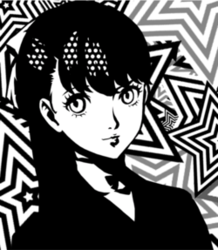

Faith

Kasumi Yoshizawa
Confidant Abilities
| Rank | Ability |
|---|---|
| 1 | - |
| 2 | Tumbling: Allows you to avoid being surrounded by enemies in Palaces. |
| 3 | - |
| 4 | Chaînés Hook: Allows you to ambush from a distance by attacking with the grappling hook. |
| 5 | Follow Up: Chance to perform a follow-up attack if Joker's attack does not down the enemy. Fitness Talk: If negotiation with any kind of Shadow fails, you can try again. |
| 6 | - |
| 7 | Harisen Recovery: Chance to cure status ailments inflicted upon party members. |
| 8 | Endure: Chance to withstand an otherwise fatal attack with 1 HP remaining. |
| 9 | Protect: Chance to shield Joker from an otherwise fatal attack. |
| 10 | Second Awakening: Evolves Persona. |
| MAX | Third Awakening: Evolves Persona. |
Schedule
- Time of DayDaytime
Day of Week: Wednesday & Sunday
Location: Kichijoji (Near Entrance)
Rank 5 Deadline (12/23)
Rank Up Progression
| Rank | Requirements / Dialogue Choices | Next Pts |
|---|---|---|
| 1 | (Automatic) 5/30 | 0 |
| 2 | 1. "We're just getting started." / "I'm so done with this." (+5) 2. "Next time, then." (+5) 6. (Phone) "Impressive." (+5) | Max HP +5 / 15 |
| 3 | 1. "Making bento?" (+10) 2. "I'm touched!" / "It looks delicious." (+5) 3. "Is that all for you?" (+10) 4. "It's definitely unique." (+5) 8. "You could try again sometime?" (+15) | Max HP +5 / 51 |
| 4 | 1. "You're looking to buy?" (+5) 2. "A pretty modern look." (+10) 4. "Of course." / "Let's keep going." (+5) 6. "Good choice." (+5) 8. "Everyone deals with that." (+5) 9. "We'll work at it together." (+5) 10. (Phone) "I'm glad to hear that." / "You should be more confident." (+5) | Max HP +5 / 20 |
| 5 | 1. "It's a surprise, yeah." (+5) 3. "Go ahead. I'll watch." (+15) 5. "I saw!" (+15) 6. "That's important." (+15) 8. (Phone) "Gymnastics." (+15) | 0 |
| 6 | Locked until 1/13 (Must have Rank 5). 10. (Phone) "You have to face it." / "So what if it is?" (+5) | Max HP +5 / 0 |
| 7 | 3. "You okay?" (+5) 4. "That isn't true." (+10) 6. "Of course." (+15) 7. (Phone) "I love a good challenge." (+5) | Max HP +5 / 55 |
| 8 | 1. Walk up to Sumire. (+15) 3. "I'm here for you." (+10) 6. Any (+15) 8. "I see..." (+5) 9. "Sounds like progress." (+10) 10. (Phone) "The resale shop." / "Online." (+5) | 40 |
| 9 | 1. Any (+5) 2. Any (+5) 3. "Of course I do." (+5) 4. Any (+10) 5. "Go ahead." (+10) Friendship: "Let's stay friends." (+0) / "You can always rely on me." (+10) (Phone) "I'm glad to hear that." (+5) Romance: "I love you too." (+0) / Any (+5) / Any (+15) (Phone) "Get used to it." (+5) | 80 |
| 10 | N/A (Locked until 2/2) | MAX |
Gift Guide
| Gift Item | Confidant Points | Purchase Location | Price |
|---|---|---|---|
| Heart Ring | +50 | Jewelry Store, Station Underground Mall, Shibuya | ¥88,000 |
| Luxury Aroma Set | +50 | Cosmetic Store, Underground Mall | ¥3,800 |
| Crimson Lipstick | +50 | Cosmetics Store, Station Underground Mall, Shibuya | ¥6,000 |
| Mini Cactus | +50 | Flower Shop, Shinjuku at Night | ¥1,600 |
| Bath of Roses | +50 | Flower Shop, Shinjuku at Night | ¥3,200 |
| Face Beautifier | +50 | Electronics Superstore, Akihabara | ¥9,800 |
Bonus Events
Hangout Meiji Shrine (Requires Faith Rank 5 or below)
- "When I have a wish, sure." (+15)
Hangout Inokashira Park (Requires Faith Rank 5 or below)
- "I don't mind." (+15)
Hangout Shinagawa (Requires Faith Rank 5 or below)
- "Yeah." (+15)
- "Let's see both." (+15)
- Receive Sea Slug Doll
Hangout Seaside Park (Requires Faith Rank 5, Before 12/22)
- "I know how you feel." (+15)
Hangout Inokashira Park (Requires Faith Rank 7+)
- "This is easy." (+15)
Hangout Asakusa (Requires Faith Rank 9+ Friendship Only)
- "You don't mind heights?" / "It is quite a view." (+10)